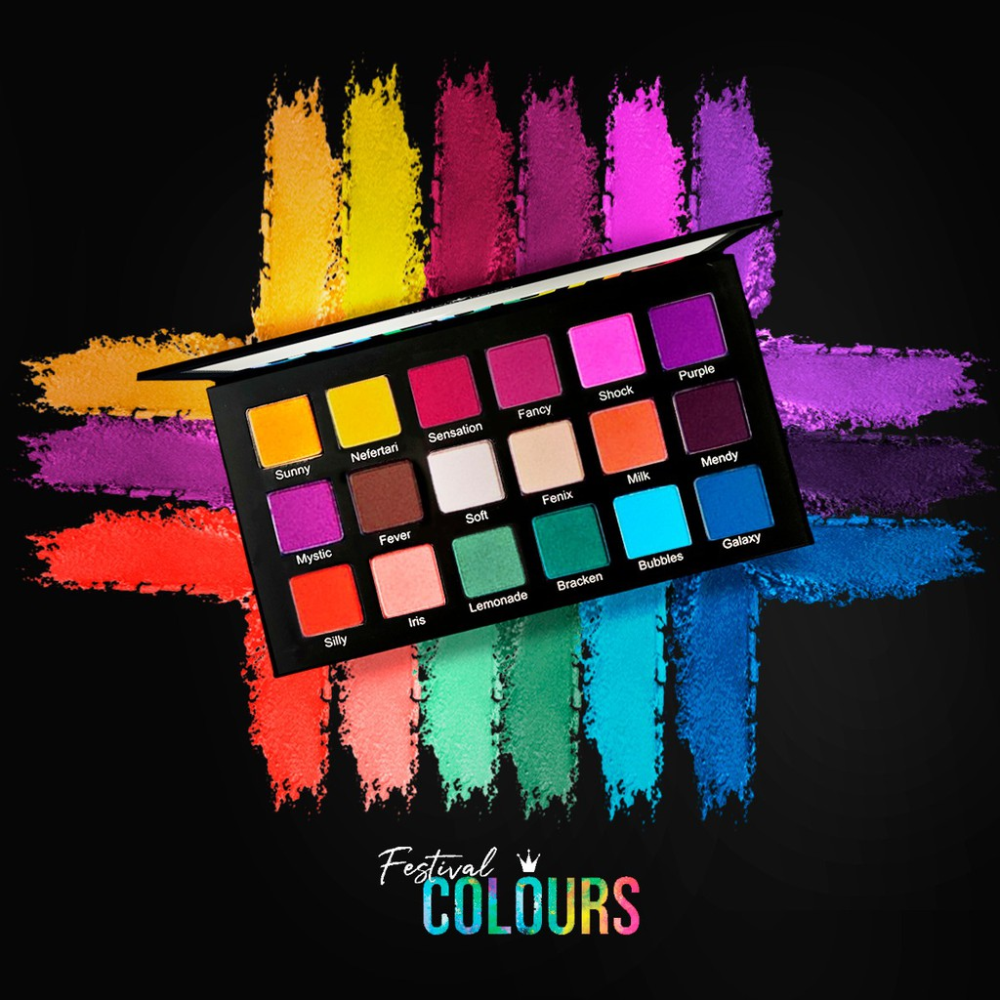
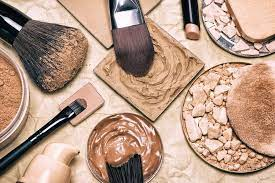
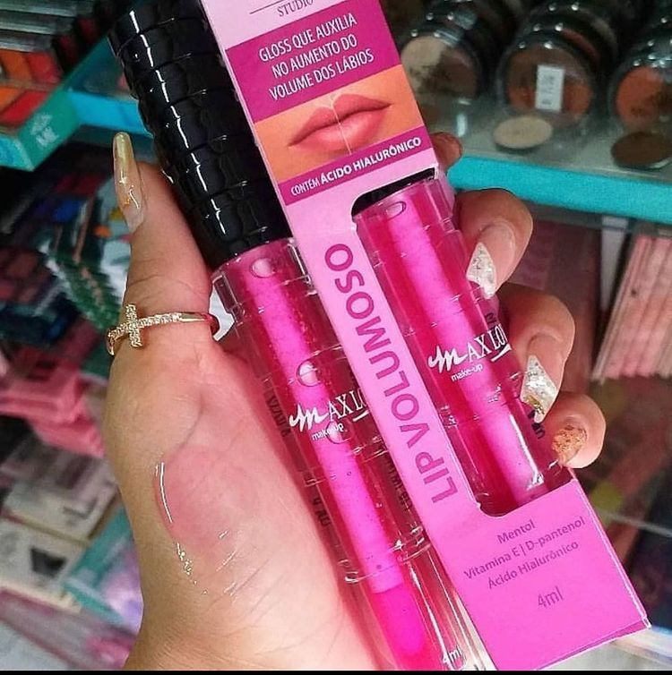
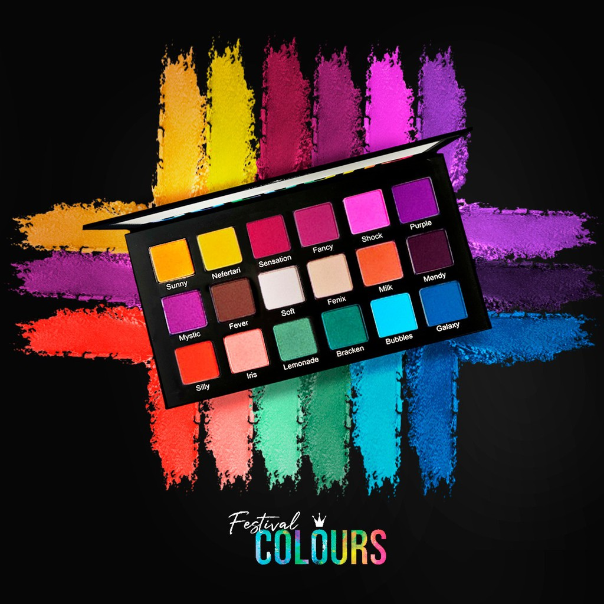
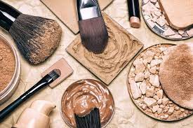
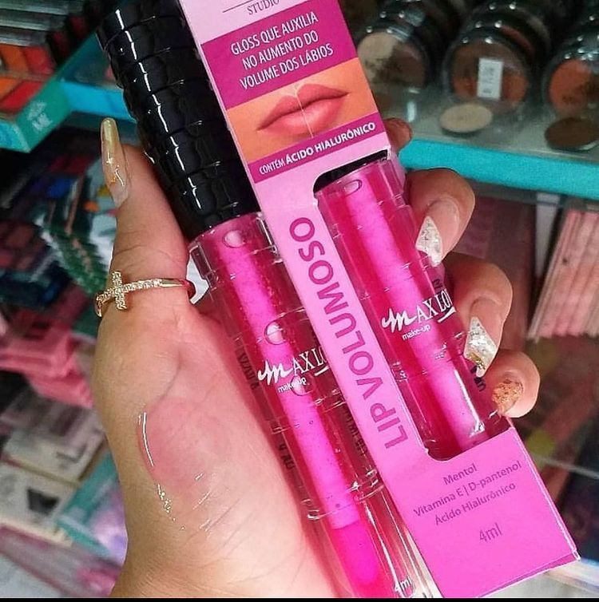

Todo dia é dia! O melhor atacado de Maquiagem do Brasil
Eu Amo make
Desde 2016, somos uma empresa nacional do setor cosmético que acredita que todos têm a oportunidade de iniciar seu próprio negócio e expressar sua beleza, seja ela qual for, e por isso somos reconhecidos pela distribuição de produtos de beleza de qualidade. desempenho com a melhor vantagem de custo.
A empresa se destaca com uma gama de produtos para rosto, corpo, pêlo e cosméticos. que possui mais de 8.000 itens exclusivos para o consumidor brasileiro.
Trabalhamos com marcas de maquiagem brasileiras e importadas e é importante que você saiba que nossos produtos, assim como a maioria de nossos parceiros, não são testados em animais.
- Todos foram selecionados para corresponder à filosofia de liberdade da cruelda
A maquiagem só prova o quanto você é linda
Escolha uma make para arrasar no seu dia
Uma mulher com a maquiagem feita não quer guerra com ninguém
A vida é passageira, mas a make sua não precisa ser
Uma make para cada estilo de mulher
Se você já é bonita sem maquiagem imagina sem
Maquiagem não é besteira é poder
Melhor que o amor eterno é uma maquiagem que dura o dia inteiro
MArca que fornecemos
Ruby Rose
Mac
Avon
Eudora
Vuit
Reveion
Boca Rosa
Ruby Rosa
Compre produtos mais buscados Buscar novidades: além dos produtos com mais saída, também vale a pena buscar por novidades no mercado de maquiagens, trazendo sempre novas opções de produtos que podem atrair os clientes. Fazer cotações: para acertar na compra de maquiagem no atacado, é essencial buscar fornecedores e fazer cotações, avaliando o preço dos produtos, quantidade mínima de compra, preço de atacado, e possível custo de frete. A junção desses valores gera o custo final, assim, fica mais fácil de comparar os preços entre um fornecedor e outro. Atenção ao estoque: é comum que na compra por atacado seja necessário comprar uma quantia maior para ter um preço melhor, mas fique atento em relação ao vencimento dos produtos, evitando a perda de estoque, o que pode gerar prejuízo.
Vantagens de comprar maquiagem no atacado O empreendedorismo é uma solução para quem quer ter um negócio próprio, mas para ter sucesso no empreendimento é preciso acertar em uma série de fatores, e um desses fatores pode ser a compra no atacado, que traz uma série de vantagens.
Preço: um dos pontos positivos de comprar maquiagem no atacado é o preço, que costuma ser mais barato que a compra no varejo, uma vez que os produtos costumam ser oferecidos sem intermediários e com a possibilidade de comprar em maior quantidade, o que pode diminuir o preço de compra e consequentemente aumentar o lucro.
Variedade de produtos: as lojas que trabalham com venda em atacado costumam oferecer uma ampla variedade de marcas, produtos e cores de maquiagem; o que facilita de encontrar uma linha completa em um só lugar, podendo oferecer diferentes marcas, tipos e cores de produtos a seus clientes. Possibilidade de empreender: a compra de maquiagem no atacado é uma ótima possibilidade de abrir um negócio, seja trabalhando com produtos para revender ou até mesmo criando um negócio na área da beleza, como o oferecimento do serviço de maquiagem, seja a domicilio ou em um salão de beleza.